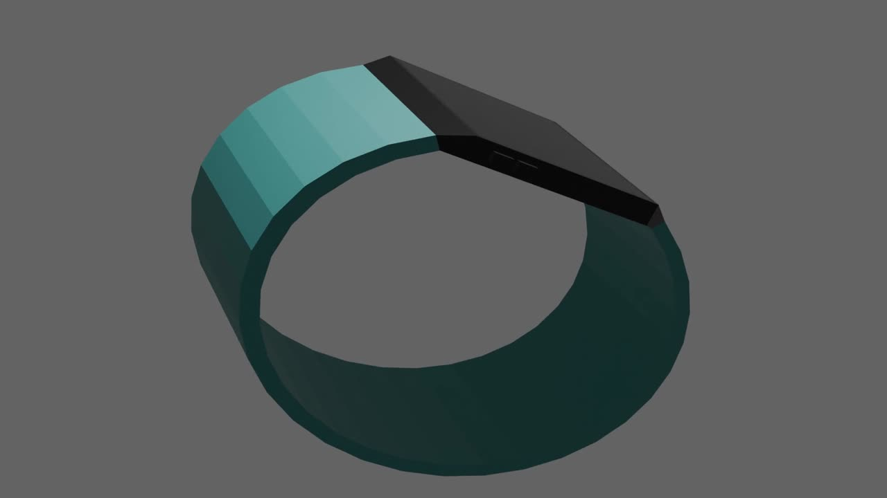
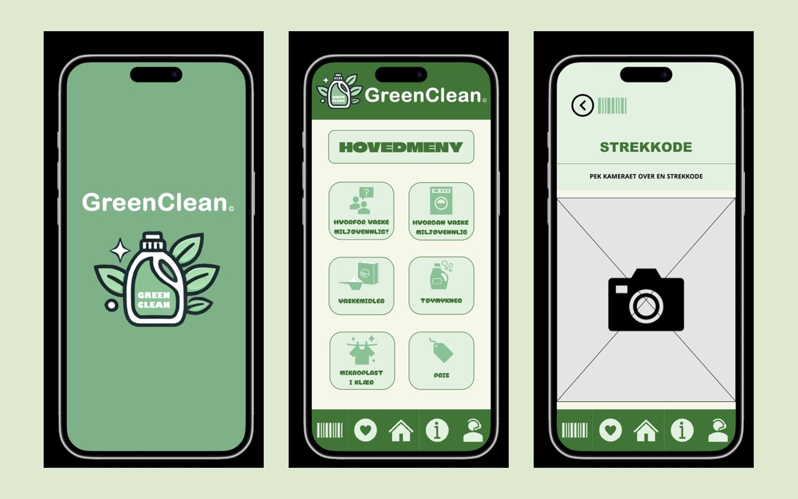
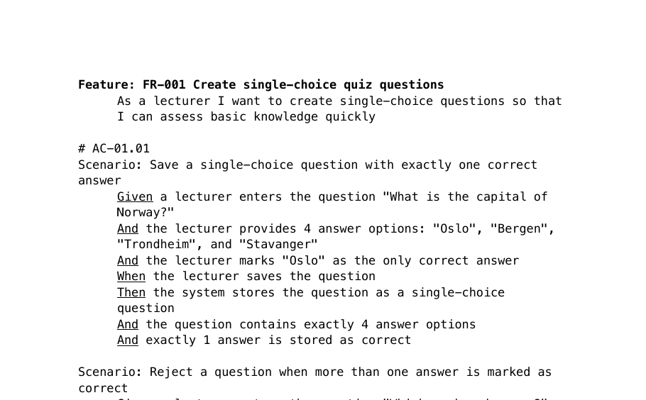

Fullstack
TourPlanner
Web app for planning tours and logging trips, with real routes on a map, photo gallery and search. Team project with 35 unit tests.
- Angular
- Spring Boot
- PostgreSQL
Portrett her
Information Systems student & aspiring software developer
I'm a final-year Information Systems student who enjoys building applications, working with data and solving technical problems. I'm especially interested in backend development, databases and data analytics.
Et utvalg av prosjekter fra studiet
Fullstack
Web app for planning tours and logging trips, with real routes on a map, photo gallery and search. Team project with 35 unit tests.

Backend & DevOps
Solo project: REST API with a seven-stage CI/CD pipeline and zero-downtime blue/green deployment on AWS.

Frontend
Responsive three-page web shop in plain HTML and CSS, built mobile first with semantic markup and at most 5 divs per page.

Database
Normalised MySQL database that suggests alternative ski waxes based on temperature, snow type, track and skill level.

UI/UX & Prototyping
Wearable that guides people around campus with light, sound and vibration. Designed with Design Thinking and tested with real users.

UX Design
App concept that helps people wash clothes with less microplastic pollution. From survey and personas to a tested Figma prototype.

Digital marketing
Campaign plan for a weekend-trip offer aimed at young adults: personas, customer journey, ads for five channels and a landing page.

Requirements
A lecturer's wishes turned into 20 numbered requirements, 15 user stories and 19 BDD scenarios, traceable from need to test.
Up next · Spring 2027
AI speech-to-text and real-time documentation for out-of-hours emergency call centres.
Operators at emergency call centres have to listen, assess and write notes at the same time, often under heavy pressure. Our team of four will test Norwegian speech-to-text models that can run locally, since patient calls cannot be processed in the cloud. The goal is a prototype that fills in the fields of the operator's checklist as the call goes on, so the operator only confirms or corrects.
2024 – 2027
Bachelor in Information Systems, specialising in Software Engineering
Jan 2026 – Jul 2026
2022 – 2023
Authorised dental health secretary
2022 – 2025
Dental health secretary (on call and substitute). Received patients, assisted the dentist during treatment and kept the clinic sterile.
2023 – 2025
Sales associate
2022 – 2023
Store associate with responsibility for locking up
2020 – 2022
Shop assistant responsible for sales, daily routines and cash settlement. In my last year I took on extra responsibility for routines, sales and motivating colleagues, on my own initiative.
2019 – 2020
Store associate
Built by hand in plain HTML and CSS, mobile first, without frameworks. Every change runs through a pipeline in GitHub Actions that validates the HTML, checks every link and tests all pages against WCAG 2 level AA. The site is only published when all tests pass.
The first accessibility test found 74 errors, mostly orange text with too little contrast. Fixing them is why links on this site are a darker orange.